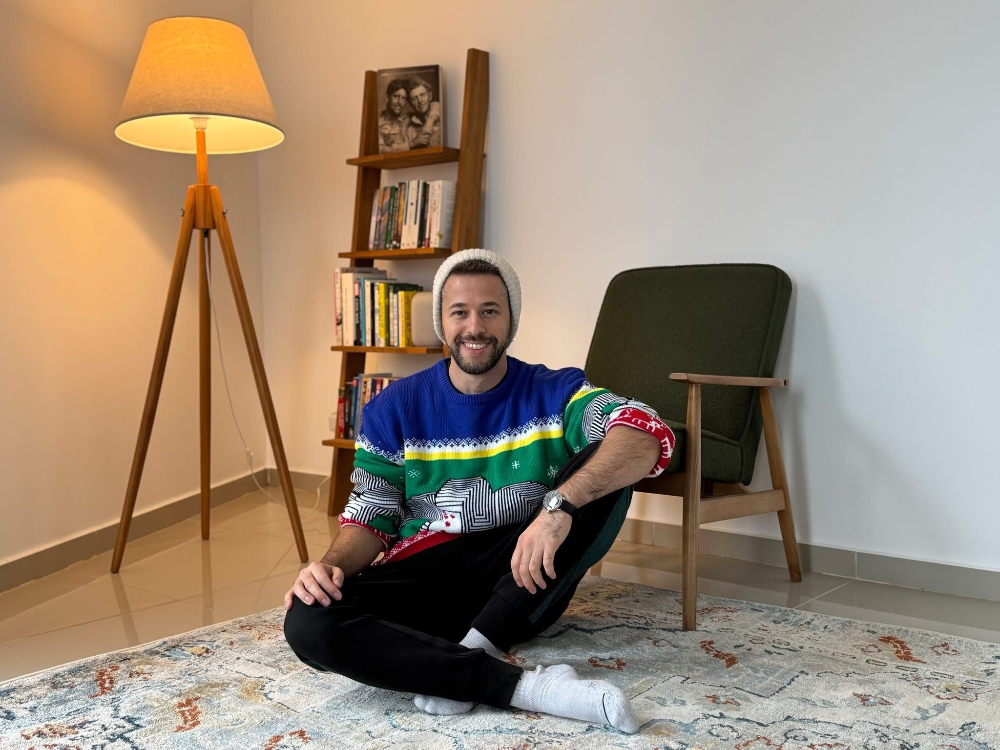

בתחילת שנות ה-90 ניצבה מיקרוסופט בפני אתגר לא פשוט. היא עמדה להשיק לראשונה מערכת הפעלה מבוססת ממשק גרפי שכוללת אייקונים וחלונות שש
פורסם במקור ב LinkedIn
בתחילת שנות ה-90 ניצבה מיקרוסופט בפני אתגר לא פשוט. היא עמדה להשיק לראשונה מערכת הפעלה מבוססת ממשק גרפי שכוללת אייקונים וחלונות ששולטים עליהם באמצעות אביזר משונה דמוי עכבר שצריך להזיז ולהקליק עליו. מה שצפוי להפוך טריוויאלי מעט לאחר מכן הרגיש באותם ימים כמו חינוך שוק בלתי אפשרי שבו צריך להרגיל משתמשים לשלוט במחשב באופן שונה לחלוטין מזה שהורגלו אליו עד כה
באותם ימים העסיקה מיקרוסופט במשרת סטודנט בחור בשם ווס צ׳רי (Wes Cherry) שבין מבחן לפרוייקט חיפש איך להעביר את הזמן כשהוא מעט משועמם. צ׳רי החליט לפתח גרסה גרפית למשחק שאהב, סוליטר, עבור מערכת ההפעלה החדשה שבנתה מיקרוסופט ושיתף אותה עם יתר הקולגות שלו. אחד המנהלים האמונים על פיצ׳רים בגרסה החדשה של חלונות נחשף למשחק ונראה שנורה ענקית דמיונית נדלקה לו מעל הראש
מיקרוסופט איתרה לגמרי במקרה דרך יצירתית ומהנה ללמד את המשתמשים החדשים שלה כיצד להשתמש בממשק הגרפי החדש שיצרה. סוליטר הותאם כך שהוטמעו בו מחוות של קליק אחד, שני קליקים וגרירה של אלמנטים ויזואלים ממקום למקום - כל זה בזמן שהמשתמשים מתוגמלים באופן משחקי על הפעולות שלהם
המשחק הפך במהירות להצלחה אדירה ובמשך שנים היה נחשב לאחד משלושת היישומים הפופולארים ביותר של משתמשי Windows. (השניים האחרים היו Word ו-Excel)
כולנו מרגישים לעיתים בורג קטן במערכת גדולה, בוודאי אלו מאיתנו שמועסקים בחברות גדולות או תאגידי ענק. ובכן, שווה לזכור ברגעים כאלו כיצד מתמחה אחד במשרת סטודנט שעבד בתאגיד אמריקאי עצום, פיתח משחק שהפך לאחד הפופולארים ביותר שנוצרו עד היום והפך לסמל בתרבות הפופולארית
(המחווה של מיקרוסופט השנה לסוליטר: בשנת 2017 פירסם צוות הסושיאל של מיקרוסופט פוסט שהציג שלושה סוודרים מומצאים אך מכוערים להחריד לחג המולד שכללו אלמנטים שונים מעולם התוכן של החברה תחת הכיתוב ״איזה מהסוודרים האלו הייתם לובשים השנה לחג?״. תוך שעות הפך הפוסט לסנסציה ומאז ועד היום מיקרוסופט חושפת מידי שנה סוודר מכוער חדש שמוקדש כל שנה לאלמנט אחר בעולמות שלה - השנה מיקרוסופט העולמית ירדה מהמיזם המסורתי אך בישראל הסוודר כן צץ בעיצוב של משחק הסוליטר המפורסם מתוך יוזמה וביצוע של מרכז הפיתוח של מיקרוסופט ישראל)
קרדיט:
Roy Latke
